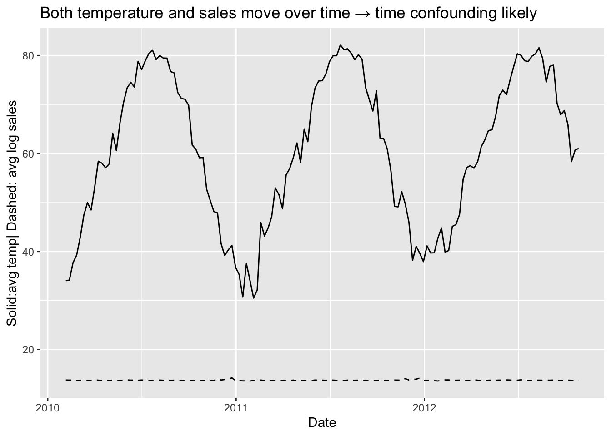
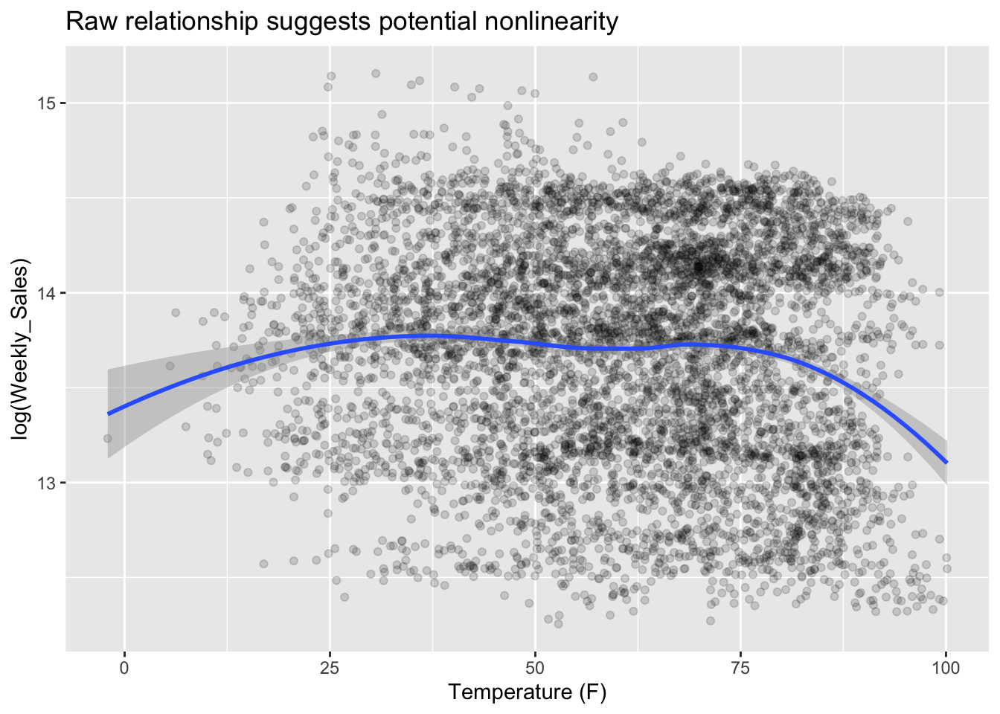

Average temperatures have been rising over time, Wal-Mart is curious whether this might have a harmful impact on their sales. The analysis is focused on evaluating the dataset provided across 45 stores spanning February 2010 through October 2012, to understand if there is casual relationship between sales and temperatures and if there are any other factors (variables) which also affect the sales along with temperature
Approach
Exploratory Analysis to understand the relationship between different variables in the dataset, based on the casual diagram. Evaluate the functional form to understand if the relationship is linear or non - linear . Since the data is panel data we need to use within variation fixed effects, control and clustered standard errors
Step 1 - Loading relevant libraries
library(tidyverse)
── Attaching core tidyverse packages ──────────────────────── tidyverse 2.0.0 ──
✔ dplyr 1.1.4 ✔ readr 2.1.6
✔ forcats 1.0.1 ✔ stringr 1.6.0
✔ ggplot2 4.0.1 ✔ tibble 3.3.1
✔ lubridate 1.9.4 ✔ tidyr 1.3.2
✔ purrr 1.2.1
── Conflicts ────────────────────────────────────────── tidyverse_conflicts() ──
✖ dplyr::filter() masks stats::filter()
✖ dplyr::lag() masks stats::lag()
ℹ Use the conflicted package (<http://conflicted.r-lib.org/>) to force all conflicts to become errors
library(scales)
Attaching package: 'scales'
The following object is masked from 'package:purrr':
discard
The following object is masked from 'package:readr':
col_factor
library(vtable)
Loading required package: kableExtra
Attaching package: 'kableExtra'
The following object is masked from 'package:dplyr':
group_rows
library(fixest)
Attaching package: 'fixest'
The following object is masked from 'package:scales':
pvalue
library(dplyr)library(lubridate)
Step 2-Loading the raw data, EDA and Transformation
Observe for null/missing values
The Date column is converted to Date Type using dmy()
Convert store as a binary variable
Convert weekly sales as logs
# reading the data# As outlined in instructions to avoid the error in reading moving one level up using ../# dmy(Date) to convert it to correct date format walmart <-read.csv("../raw_data/Walmart_Sales (1).csv") %>%mutate(Date =dmy(Date))## Understand the data types for each variablestr(walmart)
'data.frame': 6435 obs. of 8 variables:
$ Store : int 1 1 1 1 1 1 1 1 1 1 ...
$ Date : Date, format: "2010-02-05" "2010-02-12" ...
$ Weekly_Sales: num 1643691 1641957 1611968 1409728 1554807 ...
$ Holiday_Flag: int 0 1 0 0 0 0 0 0 0 0 ...
$ Temperature : num 42.3 38.5 39.9 46.6 46.5 ...
$ Fuel_Price : num 2.57 2.55 2.51 2.56 2.62 ...
$ CPI : num 211 211 211 211 211 ...
$ Unemployment: num 8.11 8.11 8.11 8.11 8.11 ...
# transforming the variables # Convert store as a binary variable # Convert weekly sales as logs walmart <- walmart %>%mutate ( Year =year(Date),Month =month(Date),YearMonth =floor_date(Date, "month"),Store =as.factor(Store),Holiday_Flag =as.factor(Holiday_Flag),log_sales =log(Weekly_Sales) ) %>%arrange(Store, Date)
Validating if the Panel Data is balanced
#Check if the panel data is balanced,each entity i.e store is represented for the same time period N <-n_distinct(walmart$Store)T_per_score <- walmart %>%group_by(Store) %>%summarize(n =n()) %>%pull(n) %>%unique()N*T_per_score ==nrow(walmart)
[1] TRUE
The Weekly Sales is right skewed, converting to logs helps stabilize the distribution and allows coefficients to be interpreted as percentage change in sales
# EDA that informs the model # Distribution of sales (motivation for log transform)ggplot ( walmart, aes(x= Weekly_Sales)) +geom_histogram(bins =40) +scale_x_continuous(labels = dollar)+labs(title ='Weekly_Sales are right-skewed -> log(Weekly_Sales) is reasonable',x ="Weekly_Sales", y="Count" )
The causal diagram shows how different factors might affect Walmart sales. Temperature is the main independent variable and weekly sales is dependent variable. The goal is to determine whether changes in temperature have a causal effect on sales.
Date which includes seasonality plays an important role. Sales trend increase/decrease during certain times of the year, failing to control for Date and Holiday_Flag would create misleading relationship between sales and temperature, example during winter sales would increase possibly due to festive season and not because of lower temperature. To address we control for Holiday Flag through date fixed effect
Store characteristics like location, size, store quality (layout, customer service, management) which can influence both temperature and sales. To control these time invariant store characteristics we include store fixed effect
Economic factors like fuel price, unemployment and CPI may affect purchasing behavior and therefore influence sales. These variables are included as controls to account for macroeconomic conditions that could otherwise confound the relationship between temperature and sales with date fixed effects
Location and Date create back-door paths between temperature and sales. Store fixed effects absorb time-invariant store characteristics including geographic location and store quality, while date fixed effects block seasonal and macroeconomic shocks.
DAG implies -
Temperature ← Location(StoreCharacterstics ) → Sales
Temperature ← Date → Sales
These are the two main back-door paths.
##Seasonality / time confounding (why we need time fixed effects) walmart %>%group_by(Date) %>%summarize(avg_temp =mean(Temperature),avg_log_sales =mean(log_sales)) %>%ggplot(aes(x = Date)) +geom_line(aes(y= avg_temp)) +geom_line(aes(y= avg_log_sales), linetype ="dashed")+labs(title ="Both temperature and sales move over time → time confounding likely", y="Solid:avg temp| Dashed: avg log sales")

The time-series EDA reveals strong seasonal and trending behavior in both temperature and sales, suggesting potential spurious correlation. To address this, I include date fixed effects to absorb common seasonal and macroeconomic shocks.
Step 4 - Functional Form
## Raw relationship: sales vs temperature (possible nonlinearity)ggplot( walmart, aes(x= Temperature, y= log_sales))+geom_point(alpha =0.15) +geom_smooth(method ="loess", se =TRUE)+labs(title ="Raw relationship suggests potential nonlinearity", x="Temperature (F)", y ="log(Weekly_Sales)" )
`geom_smooth()` using formula = 'y ~ x'

The purpose of this plot is to check the functional form i.e shape of the dependent variable i.e sales and independent variable i.e temperature, based on which we can decide on the model . The plot shows inverted U- shape, indicating a non-linear relationship between temperature and sales, hence we include quadratic term in the regression model
Step 5 - Regression Model with Fixed Effects
A panel fixed regression model blocks both date (time) and store back-doors paths.
Controls - Fuel_Price, CPI, Unemployment
Fixed effect for stores controls for time - invariant effects i.e store size, location , demographics ( gender and age of customers …etc)
Fixed effect for date ( Weekly) controls for time - invariant effects example seasonal patterns ( holiday sales)
Use clustered SEs by store (serial correlation within store over time is likely)
A one degree Fahrenheit increase in temperature is associated with approximately 0.5% increase in weekly sales, holding fuel prices, CPI, unemployment, date and store fixed effects constant.
Temperature effect -
Coefficent Temperature = 0.005 (p<0.001)
Coefficient Temperature^2 = -3.27e-5 (p<0.001)
We strongly reject the null hypothesis ( βTemp = 0)
t-test = β1Temp - β0 /SE
= 0.005 - 0 / (0.0009) ~ 5.56
The standard error is small relative to the coefficient, leading to a large t-statistic and strong statistical significance.
Sales increase with temperature upto 76 degree Fahrenheit ( the highest point of the blue curve where the slope is zero) then it starts to decline.
Fuel_Price
Coefficient: -0.005 (p<1)
A $1 increase in fuel price decreases the weekly sales by 0.5%
CPI
Coefficient: -0.0003 (p<1)
Statistically insignificant at conventional levels.
Unemployment
Coefficient: -0.026 (p<0.05)
A percentage point increase in unemployment decrease the weekly sales by 2.6%
Within R-square
Temperature and macro controls explain about 3.8% of within-store weekly variation in sales.
Conclusion:
This analysis examines whether higher temperatures causally affect weekly sales across 45 Walmart stores between 2010 and 2012. Using panel data methods with store and week fixed effects, the causal effect of temperature is identified from cross-store variation in temperature within the same week, after removing time-invariant store characteristics and common seasonal or macroeconomic shocks.
The regression results show that temperature has a statistically significant nonlinear (quadratic) relationship with sales. At moderate temperatures, a one-degree Fahrenheit increase is associated with approximately a 0.5% increase in weekly sales. However, the negative quadratic term implies diminishing returns to temperature, with sales reaching a peak at approximately 76°F. Beyond this point, further increases in temperature reduce sales.
Overall, the evidence suggests that temperature does have a causal effect on sales, but the relationship is nonlinear. For managerial decision-making, this implies that moderate warming may benefit sales, whereas extreme heat events may negatively impact store performance. These findings can help Walmart in forecasting, planning inventory and marketing events based on temperature
.png)